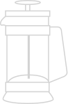
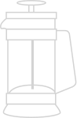

Enjoy the best coffee in the comfort of your home.
Nosotros
Somos tostadores de café de alta calidad, utilizamos perfiles de tueste que garantizan las características de un producto óptimo y logran la mejor calidad en cada grano. Nuestra misión es que puedas disfrutar del mejor café en la comodidad de tu hogar y con tu método favorito.


Calidad. Aroma. Sabor. Buenos momentos.
Blend especial
Café de intensidad media con notas de caña de azúcar, caramelo y avellanas. Acidez media y gran cuerpo.
Brasil
Café intenso con notas de cacao amargo y frutos secos como avellana. Acidez media con retrogusto persistente y gran cuerpo.
Colombia
Café de intensidad media con notas frutales, acidez media alta cítrica y brillante, cuerpo medio.
Ver todos los productos
Encontrá el café ideal para tu cafetera

 
